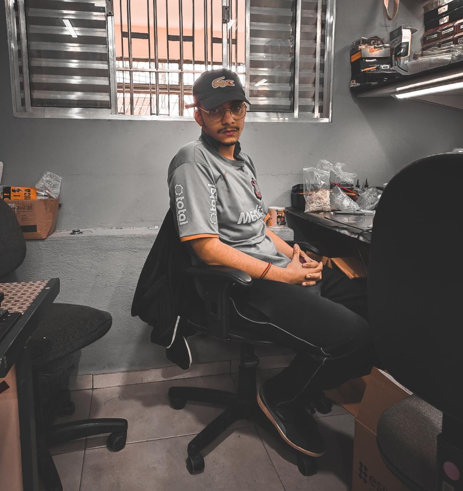

Fabio Henrique Silva Falconeri Reis

Olá me Chamo Fabio Henrique e atualmente tenho 19 anos!
Gosto de Diversas coisas como:
- Ouvir Músicas
- Jogar alguns jogos
- Programar
- Cozinhar
Venho me especializando na área da tecnologia a 5 anos, desde que ingressei no
ensino médio onde tive contato direto com a informática!
Me vejo como uma pessoa empenhada em se mostrar melhor a cada dia e muito
responsável na forma de pensar e de agir.
Me desenvolvo muito bem em um
ambiente que demanda trabalho em equipe pois, consigo ajudar e agregar
positivamente aqueles que estão próximos a mim com dicas ou ajuda direta na
função.
Experiências Profissionais
- Técnico em Manutenção
- Manutenção de Micro
Conhecimentos e habilidades:
Linguagens
Informática
- Manutenção de Computadores
- Gestão de Sistemas Operacionais
- Pacote Office
- Adobe Photoshop
Formação Acadêmica
-
Ensino Médio Etim - Etec Ferraz de Vasconcelos
- Início em 2018, Conclusão em 2020 -
Informática - Etec Ferraz de Vasconcelos
- Início em 2018, Conclusão em 2020 -
Ensino Superior: Tecnólogo em Análise e Desenvolvimento de
Sistemas Fatec Ferraz de Vasconcelos
- Atualmente no 4ºSemestre do curso
- Início em 2021, previsão de conclusão 12/2023.